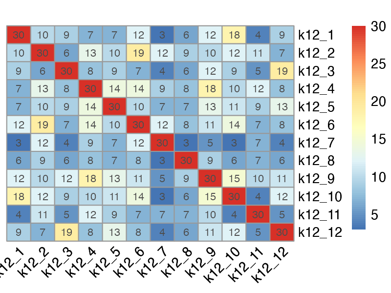
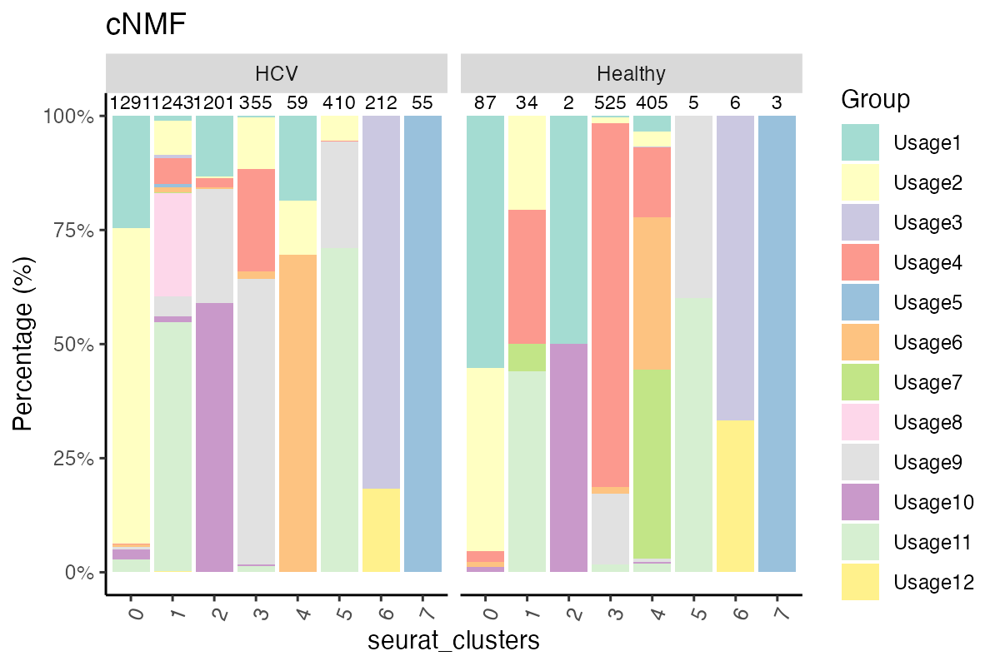

vignettes/BioYourOwnBowl-cnmf.Rmd
BioYourOwnBowl-cnmf.RmdBioYourOwnBowl provides a comprehensive pipeline for single-cell RNA-seq analysis using Seurat. This vignette demonstrates the main workflow using example data from article: https://pmc.ncbi.nlm.nih.gov/articles/PMC8376199/. The seurat object is downsampled and has metadata included.
Consensus Non-negative Matrix Factorization is a widely used computational method designed to identify gene expression programs (GEPs) from single-cell RNA sequencing (scRNA-seq) data.
Given the fact that running cNMF and generating density plot requires h5ad format, this vignette includes how to make h5ad format from seurat object and create density plot.
This vignette provide comprehensive visualizations and data mining of cNMF results, including: - Bar plots of top genes per program - Feature plot on UMAP per program - Locate genes of interest per program (Are your favorite genes in the programs? Where are they sitting?) - Assign top programs per cell (Primary, Secondary, Tietary, etc) with cutoff - Visualize Primary usage based on meta data - Compare the similarity of cNMF (to self or siblings)
The results from this notebook can be found in https://github.com/june-zhang-bioinfo/BioYourOwnBowl/tree/main/vignettes/cnmf.
# Install from GitHub
remotes::install_github("june-zhang-bioinfo/BioYourOwnBowl")#> Loading required package: SeuratObject
#> Loading required package: sp
#> 'SeuratObject' was built under R 4.4.0 but the current version is
#> 4.4.1; it is recomended that you reinstall 'SeuratObject' as the ABI
#> for R may have changed
#>
#> Attaching package: 'SeuratObject'
#> The following objects are masked from 'package:base':
#>
#> intersect, t
#>
#> Attaching package: 'dplyr'
#> The following objects are masked from 'package:stats':
#>
#> filter, lag
#> The following objects are masked from 'package:base':
#>
#> intersect, setdiff, setequal, union
#> ========================================
#> circlize version 0.4.16
#> CRAN page: https://cran.r-project.org/package=circlize
#> Github page: https://github.com/jokergoo/circlize
#> Documentation: https://jokergoo.github.io/circlize_book/book/
#>
#> If you use it in published research, please cite:
#> Gu, Z. circlize implements and enhances circular visualization
#> in R. Bioinformatics 2014.
#>
#> This message can be suppressed by:
#> suppressPackageStartupMessages(library(circlize))
#> ========================================
#>
#> Attaching package: 'Matrix'
#> The following objects are masked from 'package:tidyr':
#>
#> expand, pack, unpack
#> Loading required package: Rcpp
#> ========================================
#> ComplexHeatmap version 2.25.2
#> Bioconductor page: http://bioconductor.org/packages/ComplexHeatmap/
#> Github page: https://github.com/jokergoo/ComplexHeatmap
#> Documentation: http://jokergoo.github.io/ComplexHeatmap-reference
#>
#> If you use it in published research, please cite either one:
#> - Gu, Z. Complex Heatmap Visualization. iMeta 2022.
#> - Gu, Z. Complex heatmaps reveal patterns and correlations in multidimensional
#> genomic data. Bioinformatics 2016.
#>
#>
#> The new InteractiveComplexHeatmap package can directly export static
#> complex heatmaps into an interactive Shiny app with zero effort. Have a try!
#>
#> This message can be suppressed by:
#> suppressPackageStartupMessages(library(ComplexHeatmap))
#> ========================================
#>
#> Attaching package: 'pheatmap'
#> The following object is masked from 'package:ComplexHeatmap':
#>
#> pheatmap
#>
#> Attaching package: 'anndata'
#> The following object is masked from 'package:SeuratObject':
#>
#> Layers
#> scCustomize v3.2.2
#> If you find the scCustomize useful please cite.
#> See 'samuel-marsh.github.io/scCustomize/articles/FAQ.html' for citation info.
#>
#> Attaching package: 'rlang'
#> The following objects are masked from 'package:jsonlite':
#>
#> flatten, unbox
#>
#> Attaching package: 'matrixStats'
#> The following object is masked from 'package:dplyr':
#>
#> count
#> Warning: package 'yaml' was built under R version 4.4.3Load the processed object from the main pipeline.
data_dir_base <- system.file("extdata", package = "BioYourOwnBowl")
data_path <- file.path(data_dir_base, "GSE178756_processed.rds")
seurat_obj <- readRDS(data_path)
seurat_obj
#> An object of class Seurat
#> 9453 features across 5893 samples within 1 assay
#> Active assay: RNA (9453 features, 2000 variable features)
#> 3 layers present: counts, data, scale.data
#> 2 dimensional reductions calculated: pca, umap
cnmf_path <- file.path(data_dir_base, "cnmf_k12")
colors <- RColorBrewer::brewer.pal(12, "Set3")You can provide specific genes of interest to highlight in visualizations:
selected_features <- c(
"CD8A", "CD8B",
"CD3D", "CD3E", "CD3G",
"GZMB", "GZMA", "GZMH",
"PRF1", "NKG7", "GNLY",
"IL2RA", "TNFRSF9", "CD69",
"MKI67", "TOP2A",
"PDCD1", "LAG3", "TIGIT",
"CTLA4", "HAVCR2",
"CCR7", "SELL", "TCF7",
"LEF1", "IL7R"
)
# to use reticulate, you need to initialize your virtual environment
library(reticulate)
BioYourOwnBowl::setup_python()
prepare_h5ad(object = seurat_obj, features = VariableFeatures(seurat_obj), metadata_vars = c("Cohort", "Time_point"), file_name = "example.h5ad")
py_code <- density_plot(file_name = "example.h5ad", density_specs = list(
Cohort = list(order = c("HCV", "Healthy")),
Time_point = list(order = c("Pre_Tx", "W4", "Post_Tx", "Normal"))))highlight_genes can be turned off.
show_metrics can be turned on if you are interested in the
median expression of genes.
r <- cnmf_bar_plots(
cnmf_path,
seurat_obj,
top_n = 30,
highlight_genes = selected_features,
output_dir = "/Users/zz005/Documents/github/R/vignettes3_results",
show_metrics = F)
#> Finished generating plots in: /Users/zz005/Documents/github/R/vignettes3_results
r$top_df
#> Usage_1 Usage_2 Usage_3 Usage_4 Usage_5 Usage_6 Usage_7 Usage_8
#> 1 GNLY CCL5 S100A9 EEF1A1 HLA.DRA KLRB1 JUN EEF1A1
#> 2 GZMH TPT1 LYZ TPT1 CD74 CCL5 DNAJB1 TPT1
#> 3 GZMB NKG7 S100A8 ACTB EEF1A1 EEF1A1 FOS LTB
#> 4 FGFBP2 EEF1A1 FTL KLF2 TPT1 TPT1 JUND BTG1
#> 5 NKG7 GZMA VCAN LDHB HLA.DRB1 ZFP36L2 DUSP1 FTL
#> 6 PRF1 BTG1 FTH1 BTG1 HLA.DPA1 DUSP2 JUNB ACTB
#> 7 CCL5 LCP1 CTSS LTB HLA.DQB1 CXCR4 HSPA1A IL7R
#> 8 ACTB ZFP36L2 TPT1 FTL HLA.DPB1 IL7R HSPA1B TENM1
#> 9 S100A4 GZMK ACTB H3F3B MS4A1 NKG7 TSC22D3 CCL5
#> 10 EEF1A1 KLF2 EEF1A1 ACTG1 FTL GZMA CD69 S100A4
#> 11 TPT1 HSP90AA1 FCN1 PABPC1 LTB GZMK H3F3B S100B
#> 12 EFHD2 IL7R VIM EIF3E CD79A ARL4C HSP90AA1 CUBN
#> 13 CST7 JUND FOS JUNB ACTB BTG1 KLF6 MYOM2
#> 14 KLRD1 SYNE2 S100A4 ZFP36L2 HLA.DQA1 ACTB PPP1R15A PLA2G4B
#> 15 ACTG1 ARL4C S100A6 FTH1 FTH1 LYAR ZFP36 AK1
#> 16 PFN1 ACTB CST3 JUND BTG1 S100A4 DUSP2 VIM
#> 17 LGALS1 AHNAK MNDA NOSIP ACTG1 JUND KLF2 LMOD3
#> 18 GZMA H3F3B GAPDH TRAC CD79B JUNB IER2 AKAP5
#> 19 CTSW FTL TYROBP FOXP1 H3F3B H3F3B MTRNR2L12 SGPP2
#> 20 S100A6 CST7 SRGN TCF7 HLA.DMA KLRG1 BTG2 ISG15
#> 21 FTL JUN HLA.DRA SELL KLF2 FTL CXCR4 TNFRSF18
#> 22 CRIP1 PIK3R1 PSAP LEPROTL1 PABPC1 CTSW BTG1 TNFRSF4
#> 23 FCGR3A VIM S100A12 PFN1 JUND KLF2 HSPE1 NADK
#> 24 TRGC2 SYNE1 PABPC1 TRBC2 RALGPS2 TRDC EEF1A1 TNFRSF25
#> 25 HOPX JUNB S100A11 IL7R VIM FTH1 SAT1 PER3
#> 26 GAPDH CXCR4 SAT1 CXCR4 CRIP1 CST7 NFKBIA SLC25A33
#> 27 ZEB2 CMC1 CD14 VIM EIF3E CD69 SLC2A3 RBP7
#> 28 H3F3B ITGA4 AIF1 RGS10 HSP90AA1 TRGC1 TPT1 KIF1B
#> 29 SRGN S100A4 ACTG1 CD7 TNFRSF13C ACTG1 ZFP36L2 PGD
#> 30 SPON2 KLF6 TYMP FYB1 UCP2 DUSP1 HNRNPH1 AGTRAP
#> Usage_9 Usage_10 Usage_11 Usage_12
#> 1 S100A4 CCL5 TPT1 FTL
#> 2 LTB NKG7 EEF1A1 FTH1
#> 3 EEF1A1 ACTB SYNE2 ACTB
#> 4 CRIP1 PFN1 IL7R EEF1A1
#> 5 ACTB EEF1A1 AHNAK TPT1
#> 6 VIM CMC1 BTG1 AIF1
#> 7 TPT1 TRAC FYB1 CST3
#> 8 S100A6 FTL UTRN S100A4
#> 9 FTH1 CTSW H3F3B COTL1
#> 10 ACTG1 GZMA VPS13C LST1
#> 11 FTL S100A4 ITGB1 HLA.DRA
#> 12 TRAC FTH1 SAMHD1 HLA.DPA1
#> 13 S100A11 CD8B BCL2 CTSS
#> 14 S100A10 CST7 PAG1 S100A6
#> 15 PFN1 S100A6 VIM SAT1
#> 16 LDHB GAPDH LTB PSAP
#> 17 IL7R CD74 HNRNPH1 CD74
#> 18 GAPDH ACTG1 CDC14A IFI30
#> 19 ANXA1 H3F3B PABPC1 FCER1G
#> 20 FXYD5 TPT1 FOXP1 TYROBP
#> 21 H3F3B HLA.DPB1 ACTB FCGR3A
#> 22 EIF3E GZMH SORL1 TYMP
#> 23 BTG1 TRBC2 INPP4B ACTG1
#> 24 TRBC2 KLRK1 SLFN5 S100A11
#> 25 PLP2 CD8A KLF2 HLA.DPB1
#> 26 PABPC1 S100A10 KLF6 LYZ
#> 27 LGALS1 HLA.DPA1 HIST1H1E VIM
#> 28 ITGB1 CRIP1 ANKRD11 HLA.DRB1
#> 29 JUNB KLRD1 ATF7IP CFD
#> 30 TSPO GZMK LRRFIP1 H3F3B
ranks <- cnmf_gene_ranks(
dir_path = cnmf_path,
features = c("TOX", "PDCD1", "SELL", "IKZF2", "BACH2", "ENTPD1", "ETV1")
)
#> Warning in cnmf_gene_ranks(dir_path = cnmf_path, features = c("TOX", "PDCD1", :
#> The following genes were not found in cNMF results: PDCD1, ETV1
#> Total genes in analysis: 2000
#> Total programs in analysis: 12
#> ======================
#> Usage_1 Usage_2 Usage_3 Usage_4 Usage_5 Usage_6 Usage_7 Usage_8 Usage_9
#> TOX 368 700 1743 1320 905 1567 743 20 1583
#> SELL 1458 393 128 21 76 138 755 20 164
#> IKZF2 362 1222 1743 1471 970 705 1245 20 1583
#> BACH2 1264 1363 1743 381 504 1188 980 20 1539
#> ENTPD1 1458 1670 390 1548 211 1567 1306 20 1500
#> Usage_10 Usage_11 Usage_12
#> TOX 537 1063 1634
#> SELL 319 262 1634
#> IKZF2 842 393 1600
#> BACH2 842 646 1634
#> ENTPD1 842 985 851
ranks
#> Usage_1 Usage_2 Usage_3 Usage_4 Usage_5 Usage_6 Usage_7 Usage_8 Usage_9
#> TOX 368 700 1743 1320 905 1567 743 20 1583
#> SELL 1458 393 128 21 76 138 755 20 164
#> IKZF2 362 1222 1743 1471 970 705 1245 20 1583
#> BACH2 1264 1363 1743 381 504 1188 980 20 1539
#> ENTPD1 1458 1670 390 1548 211 1567 1306 20 1500
#> Usage_10 Usage_11 Usage_12
#> TOX 537 1063 1634
#> SELL 319 262 1634
#> IKZF2 842 393 1600
#> BACH2 842 646 1634
#> ENTPD1 842 985 851
cnmf_umaps(object = seurat_obj,
dir_path = cnmf_path,
output_dir = "/Users/zz005/Documents/github/R/vignettes3_results")
#> Warning: Some of the plotted features are from meta.data slot.
#> • Please check that `na_cutoff` param is being set appropriately for those
#> features.
#> Warning: The `slot` argument of `FetchData()` is deprecated as of SeuratObject 5.0.0.
#> ℹ Please use the `layer` argument instead.
#> ℹ The deprecated feature was likely used in the Seurat package.
#> Please report the issue at <https://github.com/satijalab/seurat/issues>.
#> This warning is displayed once every 8 hours.
#> Call `lifecycle::last_lifecycle_warnings()` to see where this warning was
#> generated.
#>
#> NOTE: FeaturePlot_scCustom uses a specified `na_cutoff` when plotting to
#> color cells with no expression as background color separate from color scale.
#> Please ensure `na_cutoff` value is appropriate for feature being plotted.
#> Default setting is appropriate for use when plotting from 'RNA' assay.
#> When `na_cutoff` not appropriate (e.g., module scores) set to NULL to
#> plot all cells in gradient color palette.
#>
#> -----This message will be shown once per session.-----
#> Warning: Some of the plotted features are from meta.data slot.
#> • Please check that `na_cutoff` param is being set appropriately for those
#> features.
#> Warning: Some of the plotted features are from meta.data slot.
#> • Please check that `na_cutoff` param is being set appropriately for those
#> features.
#> Some of the plotted features are from meta.data slot.
#> • Please check that `na_cutoff` param is being set appropriately for those
#> features.
#> Some of the plotted features are from meta.data slot.
#> • Please check that `na_cutoff` param is being set appropriately for those
#> features.
#> Some of the plotted features are from meta.data slot.
#> • Please check that `na_cutoff` param is being set appropriately for those
#> features.
#> Some of the plotted features are from meta.data slot.
#> • Please check that `na_cutoff` param is being set appropriately for those
#> features.
#> Some of the plotted features are from meta.data slot.
#> • Please check that `na_cutoff` param is being set appropriately for those
#> features.
#> Some of the plotted features are from meta.data slot.
#> • Please check that `na_cutoff` param is being set appropriately for those
#> features.
#> Some of the plotted features are from meta.data slot.
#> • Please check that `na_cutoff` param is being set appropriately for those
#> features.
#> Some of the plotted features are from meta.data slot.
#> • Please check that `na_cutoff` param is being set appropriately for those
#> features.
#> Some of the plotted features are from meta.data slot.
#> • Please check that `na_cutoff` param is being set appropriately for those
#> features.
#> UMAP usage plots saved to: /Users/zz005/Documents/github/R/vignettes3_results
#> An object of class Seurat
#> 9453 features across 5893 samples within 1 assay
#> Active assay: RNA (9453 features, 2000 variable features)
#> 3 layers present: counts, data, scale.data
#> 2 dimensional reductions calculated: pca, umap
r <- cnmf_top_programs(seurat_obj, cnmf_path, cutoff = 0)
seurat_obj <- r$object
df <- r$cell_by_pro # used for sankey plot
compare_cnmf_programs(
dir1 = cnmf_path,
dir2 = cnmf_path,
object = seurat_obj,
top_n = 30,
label1 = "k12",
label2 = "k12",
heatmap_title = "",
vf_only = F
)
#> $overlap_matrix
#> k12_1 k12_2 k12_3 k12_4 k12_5 k12_6 k12_7 k12_8 k12_9 k12_10 k12_11
#> k12_1 30 10 9 7 7 12 3 6 12 18 4
#> k12_2 10 30 6 13 10 19 12 9 10 12 11
#> k12_3 9 6 30 8 9 7 4 6 12 9 5
#> k12_4 7 13 8 30 14 14 9 8 18 10 12
#> k12_5 7 10 9 14 30 10 7 7 13 11 9
#> k12_6 12 19 7 14 10 30 12 8 11 14 7
#> k12_7 3 12 4 9 7 12 30 3 5 3 7
#> k12_8 6 9 6 8 7 8 3 30 9 6 7
#> k12_9 12 10 12 18 13 11 5 9 30 15 10
#> k12_10 18 12 9 10 11 14 3 6 15 30 4
#> k12_11 4 11 5 12 9 7 7 7 10 4 30
#> k12_12 9 7 19 8 13 8 4 6 11 12 5
#> k12_12
#> k12_1 9
#> k12_2 7
#> k12_3 19
#> k12_4 8
#> k12_5 13
#> k12_6 8
#> k12_7 4
#> k12_8 6
#> k12_9 11
#> k12_10 12
#> k12_11 5
#> k12_12 30
#>
#> $top_df1
#> Usage_1 Usage_2 Usage_3 Usage_4 Usage_5 Usage_6 Usage_7 Usage_8
#> 1 GNLY CCL5 S100A9 EEF1A1 HLA.DRA KLRB1 JUN EEF1A1
#> 2 GZMH TPT1 LYZ TPT1 CD74 CCL5 DNAJB1 TPT1
#> 3 GZMB NKG7 S100A8 ACTB EEF1A1 EEF1A1 FOS LTB
#> 4 FGFBP2 EEF1A1 FTL KLF2 TPT1 TPT1 JUND BTG1
#> 5 NKG7 GZMA VCAN LDHB HLA.DRB1 ZFP36L2 DUSP1 FTL
#> 6 PRF1 BTG1 FTH1 BTG1 HLA.DPA1 DUSP2 JUNB ACTB
#> 7 CCL5 LCP1 CTSS LTB HLA.DQB1 CXCR4 HSPA1A IL7R
#> 8 ACTB ZFP36L2 TPT1 FTL HLA.DPB1 IL7R HSPA1B TENM1
#> 9 S100A4 GZMK ACTB H3F3B MS4A1 NKG7 TSC22D3 CCL5
#> 10 EEF1A1 KLF2 EEF1A1 ACTG1 FTL GZMA CD69 S100A4
#> 11 TPT1 HSP90AA1 FCN1 PABPC1 LTB GZMK H3F3B S100B
#> 12 EFHD2 IL7R VIM EIF3E CD79A ARL4C HSP90AA1 CUBN
#> 13 CST7 JUND FOS JUNB ACTB BTG1 KLF6 MYOM2
#> 14 KLRD1 SYNE2 S100A4 ZFP36L2 HLA.DQA1 ACTB PPP1R15A PLA2G4B
#> 15 ACTG1 ARL4C S100A6 FTH1 FTH1 LYAR ZFP36 AK1
#> 16 PFN1 ACTB CST3 JUND BTG1 S100A4 DUSP2 VIM
#> 17 LGALS1 AHNAK MNDA NOSIP ACTG1 JUND KLF2 LMOD3
#> 18 GZMA H3F3B GAPDH TRAC CD79B JUNB IER2 AKAP5
#> 19 CTSW FTL TYROBP FOXP1 H3F3B H3F3B MTRNR2L12 SGPP2
#> 20 S100A6 CST7 SRGN TCF7 HLA.DMA KLRG1 BTG2 ISG15
#> 21 FTL JUN HLA.DRA SELL KLF2 FTL CXCR4 TNFRSF18
#> 22 CRIP1 PIK3R1 PSAP LEPROTL1 PABPC1 CTSW BTG1 TNFRSF4
#> 23 FCGR3A VIM S100A12 PFN1 JUND KLF2 HSPE1 NADK
#> 24 TRGC2 SYNE1 PABPC1 TRBC2 RALGPS2 TRDC EEF1A1 TNFRSF25
#> 25 HOPX JUNB S100A11 IL7R VIM FTH1 SAT1 PER3
#> 26 GAPDH CXCR4 SAT1 CXCR4 CRIP1 CST7 NFKBIA SLC25A33
#> 27 ZEB2 CMC1 CD14 VIM EIF3E CD69 SLC2A3 RBP7
#> 28 H3F3B ITGA4 AIF1 RGS10 HSP90AA1 TRGC1 TPT1 KIF1B
#> 29 SRGN S100A4 ACTG1 CD7 TNFRSF13C ACTG1 ZFP36L2 PGD
#> 30 SPON2 KLF6 TYMP FYB1 UCP2 DUSP1 HNRNPH1 AGTRAP
#> Usage_9 Usage_10 Usage_11 Usage_12
#> 1 S100A4 CCL5 TPT1 FTL
#> 2 LTB NKG7 EEF1A1 FTH1
#> 3 EEF1A1 ACTB SYNE2 ACTB
#> 4 CRIP1 PFN1 IL7R EEF1A1
#> 5 ACTB EEF1A1 AHNAK TPT1
#> 6 VIM CMC1 BTG1 AIF1
#> 7 TPT1 TRAC FYB1 CST3
#> 8 S100A6 FTL UTRN S100A4
#> 9 FTH1 CTSW H3F3B COTL1
#> 10 ACTG1 GZMA VPS13C LST1
#> 11 FTL S100A4 ITGB1 HLA.DRA
#> 12 TRAC FTH1 SAMHD1 HLA.DPA1
#> 13 S100A11 CD8B BCL2 CTSS
#> 14 S100A10 CST7 PAG1 S100A6
#> 15 PFN1 S100A6 VIM SAT1
#> 16 LDHB GAPDH LTB PSAP
#> 17 IL7R CD74 HNRNPH1 CD74
#> 18 GAPDH ACTG1 CDC14A IFI30
#> 19 ANXA1 H3F3B PABPC1 FCER1G
#> 20 FXYD5 TPT1 FOXP1 TYROBP
#> 21 H3F3B HLA.DPB1 ACTB FCGR3A
#> 22 EIF3E GZMH SORL1 TYMP
#> 23 BTG1 TRBC2 INPP4B ACTG1
#> 24 TRBC2 KLRK1 SLFN5 S100A11
#> 25 PLP2 CD8A KLF2 HLA.DPB1
#> 26 PABPC1 S100A10 KLF6 LYZ
#> 27 LGALS1 HLA.DPA1 HIST1H1E VIM
#> 28 ITGB1 CRIP1 ANKRD11 HLA.DRB1
#> 29 JUNB KLRD1 ATF7IP CFD
#> 30 TSPO GZMK LRRFIP1 H3F3B
#>
#> $top_df2
#> Usage_1 Usage_2 Usage_3 Usage_4 Usage_5 Usage_6 Usage_7 Usage_8
#> 1 GNLY CCL5 S100A9 EEF1A1 HLA.DRA KLRB1 JUN EEF1A1
#> 2 GZMH TPT1 LYZ TPT1 CD74 CCL5 DNAJB1 TPT1
#> 3 GZMB NKG7 S100A8 ACTB EEF1A1 EEF1A1 FOS LTB
#> 4 FGFBP2 EEF1A1 FTL KLF2 TPT1 TPT1 JUND BTG1
#> 5 NKG7 GZMA VCAN LDHB HLA.DRB1 ZFP36L2 DUSP1 FTL
#> 6 PRF1 BTG1 FTH1 BTG1 HLA.DPA1 DUSP2 JUNB ACTB
#> 7 CCL5 LCP1 CTSS LTB HLA.DQB1 CXCR4 HSPA1A IL7R
#> 8 ACTB ZFP36L2 TPT1 FTL HLA.DPB1 IL7R HSPA1B TENM1
#> 9 S100A4 GZMK ACTB H3F3B MS4A1 NKG7 TSC22D3 CCL5
#> 10 EEF1A1 KLF2 EEF1A1 ACTG1 FTL GZMA CD69 S100A4
#> 11 TPT1 HSP90AA1 FCN1 PABPC1 LTB GZMK H3F3B S100B
#> 12 EFHD2 IL7R VIM EIF3E CD79A ARL4C HSP90AA1 CUBN
#> 13 CST7 JUND FOS JUNB ACTB BTG1 KLF6 MYOM2
#> 14 KLRD1 SYNE2 S100A4 ZFP36L2 HLA.DQA1 ACTB PPP1R15A PLA2G4B
#> 15 ACTG1 ARL4C S100A6 FTH1 FTH1 LYAR ZFP36 AK1
#> 16 PFN1 ACTB CST3 JUND BTG1 S100A4 DUSP2 VIM
#> 17 LGALS1 AHNAK MNDA NOSIP ACTG1 JUND KLF2 LMOD3
#> 18 GZMA H3F3B GAPDH TRAC CD79B JUNB IER2 AKAP5
#> 19 CTSW FTL TYROBP FOXP1 H3F3B H3F3B MTRNR2L12 SGPP2
#> 20 S100A6 CST7 SRGN TCF7 HLA.DMA KLRG1 BTG2 ISG15
#> 21 FTL JUN HLA.DRA SELL KLF2 FTL CXCR4 TNFRSF18
#> 22 CRIP1 PIK3R1 PSAP LEPROTL1 PABPC1 CTSW BTG1 TNFRSF4
#> 23 FCGR3A VIM S100A12 PFN1 JUND KLF2 HSPE1 NADK
#> 24 TRGC2 SYNE1 PABPC1 TRBC2 RALGPS2 TRDC EEF1A1 TNFRSF25
#> 25 HOPX JUNB S100A11 IL7R VIM FTH1 SAT1 PER3
#> 26 GAPDH CXCR4 SAT1 CXCR4 CRIP1 CST7 NFKBIA SLC25A33
#> 27 ZEB2 CMC1 CD14 VIM EIF3E CD69 SLC2A3 RBP7
#> 28 H3F3B ITGA4 AIF1 RGS10 HSP90AA1 TRGC1 TPT1 KIF1B
#> 29 SRGN S100A4 ACTG1 CD7 TNFRSF13C ACTG1 ZFP36L2 PGD
#> 30 SPON2 KLF6 TYMP FYB1 UCP2 DUSP1 HNRNPH1 AGTRAP
#> Usage_9 Usage_10 Usage_11 Usage_12
#> 1 S100A4 CCL5 TPT1 FTL
#> 2 LTB NKG7 EEF1A1 FTH1
#> 3 EEF1A1 ACTB SYNE2 ACTB
#> 4 CRIP1 PFN1 IL7R EEF1A1
#> 5 ACTB EEF1A1 AHNAK TPT1
#> 6 VIM CMC1 BTG1 AIF1
#> 7 TPT1 TRAC FYB1 CST3
#> 8 S100A6 FTL UTRN S100A4
#> 9 FTH1 CTSW H3F3B COTL1
#> 10 ACTG1 GZMA VPS13C LST1
#> 11 FTL S100A4 ITGB1 HLA.DRA
#> 12 TRAC FTH1 SAMHD1 HLA.DPA1
#> 13 S100A11 CD8B BCL2 CTSS
#> 14 S100A10 CST7 PAG1 S100A6
#> 15 PFN1 S100A6 VIM SAT1
#> 16 LDHB GAPDH LTB PSAP
#> 17 IL7R CD74 HNRNPH1 CD74
#> 18 GAPDH ACTG1 CDC14A IFI30
#> 19 ANXA1 H3F3B PABPC1 FCER1G
#> 20 FXYD5 TPT1 FOXP1 TYROBP
#> 21 H3F3B HLA.DPB1 ACTB FCGR3A
#> 22 EIF3E GZMH SORL1 TYMP
#> 23 BTG1 TRBC2 INPP4B ACTG1
#> 24 TRBC2 KLRK1 SLFN5 S100A11
#> 25 PLP2 CD8A KLF2 HLA.DPB1
#> 26 PABPC1 S100A10 KLF6 LYZ
#> 27 LGALS1 HLA.DPA1 HIST1H1E VIM
#> 28 ITGB1 CRIP1 ANKRD11 HLA.DRB1
#> 29 JUNB KLRD1 ATF7IP CFD
#> 30 TSPO GZMK LRRFIP1 H3F3B
stacked_bar_plots(
object = seurat_obj,
idents = "Primary",
layers = c("seurat_clusters", "Cohort"),
layer_orders = list(Cohort = c("HCV", "Healthy")),
colors = rep(colors, 2),
title = "cNMF", show_counts = T
)
sessionInfo()
#> R version 4.4.1 (2024-06-14)
#> Platform: aarch64-apple-darwin20
#> Running under: macOS 26.1
#>
#> Matrix products: default
#> BLAS: /Library/Frameworks/R.framework/Versions/4.4-arm64/Resources/lib/libRblas.0.dylib
#> LAPACK: /Library/Frameworks/R.framework/Versions/4.4-arm64/Resources/lib/libRlapack.dylib; LAPACK version 3.12.0
#>
#> locale:
#> [1] en_US.UTF-8/en_US.UTF-8/en_US.UTF-8/C/en_US.UTF-8/en_US.UTF-8
#>
#> time zone: America/New_York
#> tzcode source: internal
#>
#> attached base packages:
#> [1] grid stats graphics grDevices datasets utils methods
#> [8] base
#>
#> other attached packages:
#> [1] yaml_2.3.11 sessioninfo_1.2.3
#> [3] matrixStats_1.5.0 rlang_1.1.6
#> [5] scCustomize_3.2.2 convert2anndata_0.2.0
#> [7] anndata_0.8.0 pheatmap_1.0.13
#> [9] ComplexHeatmap_2.25.2 harmony_1.2.4
#> [11] Rcpp_1.1.0 Matrix_1.7-0
#> [13] jsonlite_2.0.0 glue_1.8.0
#> [15] stringr_1.6.0 treemap_2.4-4
#> [17] RColorBrewer_1.1-3 eulerr_7.0.4
#> [19] circlize_0.4.16 tibble_3.3.0
#> [21] tidyr_1.3.1 dplyr_1.1.4
#> [23] ggplot2_3.5.2 Seurat_5.1.0
#> [25] SeuratObject_5.2.0 sp_2.2-0
#> [27] BioYourOwnBowl_0.0.0.9000
#>
#> loaded via a namespace (and not attached):
#> [1] ggtext_0.1.2 fs_1.6.6
#> [3] spatstat.sparse_3.1-0 lubridate_1.9.4
#> [5] httr_1.4.7 doParallel_1.0.17
#> [7] tools_4.4.1 sctransform_0.4.2
#> [9] backports_1.5.0 R6_2.6.1
#> [11] lazyeval_0.2.2 uwot_0.2.4
#> [13] GetoptLong_1.1.0 litedown_0.8
#> [15] withr_3.0.2 gridExtra_2.3
#> [17] progressr_0.18.0 cli_3.6.5
#> [19] Biobase_2.66.0 textshaping_1.0.4
#> [21] spatstat.explore_3.6-0 fastDummies_1.7.5
#> [23] labeling_0.4.3 sass_0.4.10
#> [25] spatstat.data_3.1-9 ggridges_0.5.7
#> [27] pbapply_1.7-4 pkgdown_2.2.0
#> [29] commonmark_2.0.0 systemfonts_1.3.1
#> [31] parallelly_1.45.1 rstudioapi_0.17.1
#> [33] generics_0.1.4 shape_1.4.6.1
#> [35] ica_1.0-3 spatstat.random_3.4-3
#> [37] car_3.1-3 ggbeeswarm_0.7.3
#> [39] S4Vectors_0.44.0 abind_1.4-8
#> [41] lifecycle_1.0.4 snakecase_0.11.1
#> [43] carData_3.0-5 SummarizedExperiment_1.36.0
#> [45] SparseArray_1.6.2 Rtsne_0.17
#> [47] paletteer_1.6.0 promises_1.5.0
#> [49] crayon_1.5.3 miniUI_0.1.2
#> [51] lattice_0.22-6 cowplot_1.2.0
#> [53] pillar_1.11.1 knitr_1.50
#> [55] optparse_1.7.5 GenomicRanges_1.58.0
#> [57] rjson_0.2.23 future.apply_1.20.0
#> [59] codetools_0.2-20 leiden_0.4.3.1
#> [61] spatstat.univar_3.1-5 data.table_1.17.8
#> [63] vctrs_0.6.5 png_0.1-8
#> [65] EnhancedVolcano_1.20.0 spam_2.11-1
#> [67] gtable_0.3.6 assertthat_0.2.1
#> [69] rematch2_2.1.2 cachem_1.1.0
#> [71] xfun_0.54 S4Arrays_1.6.0
#> [73] mime_0.13 survival_3.6-4
#> [75] SingleCellExperiment_1.28.1 iterators_1.0.14
#> [77] fitdistrplus_1.2-4 ROCR_1.0-11
#> [79] nlme_3.1-164 RcppAnnoy_0.0.22
#> [81] GenomeInfoDb_1.42.3 bslib_0.9.0
#> [83] irlba_2.3.5.1 vipor_0.4.7
#> [85] KernSmooth_2.23-24 otel_0.2.0
#> [87] colorspace_2.1-2 BiocGenerics_0.52.0
#> [89] ggrastr_1.0.2 tidyselect_1.2.1
#> [91] compiler_4.4.1 xml2_1.5.1
#> [93] desc_1.4.3 DelayedArray_0.32.0
#> [95] plotly_4.11.0 scales_1.4.0
#> [97] lmtest_0.9-40 digest_0.6.39
#> [99] goftest_1.2-3 spatstat.utils_3.2-0
#> [101] rmarkdown_2.30 XVector_0.46.0
#> [103] htmltools_0.5.9 pkgconfig_2.0.3
#> [105] MatrixGenerics_1.18.1 fastmap_1.2.0
#> [107] GlobalOptions_0.1.3 htmlwidgets_1.6.4
#> [109] UCSC.utils_1.2.0 shiny_1.12.0
#> [111] farver_2.1.2 jquerylib_0.1.4
#> [113] zoo_1.8-14 magrittr_2.0.4
#> [115] Formula_1.2-5 GenomeInfoDbData_1.2.13
#> [117] dotCall64_1.2 patchwork_1.3.2
#> [119] reticulate_1.44.1 stringi_1.8.7
#> [121] zlibbioc_1.52.0 MASS_7.3-60.2
#> [123] plyr_1.8.9 parallel_4.4.1
#> [125] listenv_0.10.0 ggrepel_0.9.6
#> [127] forcats_1.0.1 deldir_2.0-4
#> [129] splines_4.4.1 gridtext_0.1.5
#> [131] tensor_1.5.1 igraph_2.2.1
#> [133] ggpubr_0.6.2 spatstat.geom_3.6-1
#> [135] ggsignif_0.6.4 markdown_2.0
#> [137] RcppHNSW_0.6.0 reshape2_1.4.5
#> [139] stats4_4.4.1 evaluate_1.0.5
#> [141] renv_1.1.0 ggprism_1.0.7
#> [143] foreach_1.5.2 httpuv_1.6.16
#> [145] RANN_2.6.2 getopt_1.20.4
#> [147] purrr_1.2.0 polyclip_1.10-7
#> [149] future_1.68.0 clue_0.3-66
#> [151] scattermore_1.2 gridBase_0.4-7
#> [153] janitor_2.2.1 broom_1.0.11
#> [155] xtable_1.8-4 RSpectra_0.16-2
#> [157] rstatix_0.7.3 later_1.4.4
#> [159] viridisLite_0.4.2 ragg_1.5.0
#> [161] beeswarm_0.4.0 IRanges_2.40.1
#> [163] cluster_2.1.6 timechange_0.3.0
#> [165] globals_0.18.0